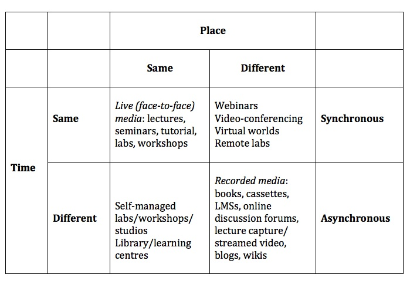
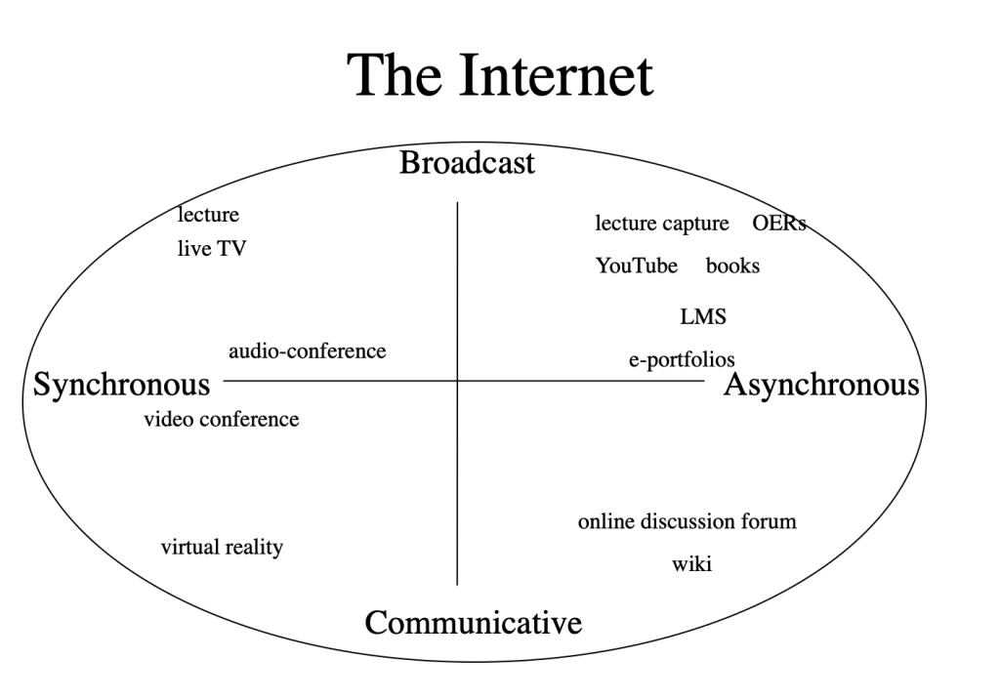

7.6 As dimensões de tempo e espaço das mídias

Diferentes mídias e tecnologias funcionam de forma distinta no espaço e no tempo. Estas dimensões são relevantes tanto para facilitar ou inibir a aprendizagem como para limitar ou permitir uma maior flexibilidade aos aprendizes. Existem, na verdade, duas dimensões intimamente relacionadas aqui:
- "ao vivo" (live) ou gravado;
- síncrono ou assíncrono.
7.6.1 Ao vivo ou gravado
Estas categorias apresentam um significado bastante óbvio. As mídias ao vivo, por definição, são eventos presenciais, tais como aulas expositivas, seminários e tutorias presenciais individuais. Um evento "ao vivo" exige que todos estejam presentes no mesmo local e no mesmo momento que os restantes. Poderá tratar-se de um concerto de rock, de um acontecimento esportivo ou de uma aula expositiva. Os eventos ao vivo, como um seminário por exemplo, funcionam bem quando as relações pessoais são importantes, tais como a construção de confiança ou para desafiar atitudes ou posições que são emocionalmente marcantes (seja por parte dos estudantes ou dos professores). A principal vantagem educativa de uma aula expositiva ao vivo reside no fato de poder apresentar uma forte qualidade emotiva que inspira ou incentiva os aprendizes para além da própria transmissão de conhecimentos, ou de poder fornecer um "estímulo" emocional que ajude os estudantes a mudarem de posições anteriormente defendidas. Os eventos ao vivo, por definição, são efêmeros. Podem ser bem recordados, mas não podem ser repetidos ou, se o forem, tratar-se-á de uma experiência diferente ou para um público distinto. Assim, verifica-se um forte elemento qualitativo ou afetivo nos eventos ao vivo.
As mídias gravadas, por outro lado, encontram-se permanentemente disponíveis para quem possui a gravação, como uma fita de vídeo ou uma fita de áudio. Os livros e outros formatos impressos constituem também mídias gravadas. A principal importância educativa das mídias gravadas reside no fato de os estudantes poderem acessar o mesmo material didático um número ilimitado de vezes e nos momentos que lhes forem mais convenientes.
Os eventos ao vivo também podem ser gravados, mas, como sabe quem já assistiu a um evento esportivo ao vivo em comparação com a gravação desse mesmo evento, a experiência é diferente, registando-se normalmente uma menor carga emocional ao assistir a uma gravação (sobretudo se já se conhecer o resultado). Assim, poderíamos pensar nos eventos "ao vivo" como "quentes" e nos eventos gravados como "frios". As mídias gravadas podem, naturalmente, ser emocionalmente marcantes, como um bom romance, mas a experiência difere da participação real nos acontecimentos descritos.
7.6.2 Síncrono ou assíncrono
As tecnologias síncronas exigem que todos os que participam na comunicação interajam em conjunto, no mesmo momento, mas não necessariamente no mesmo local.
Assim, os eventos ao vivo constituem um exemplo de mídias síncronas, mas, ao contrário destes, a tecnologia permite a aprendizagem síncrona sem que todos tenham de estar no mesmo local, embora todos tenham de participar no evento no mesmo momento. Uma videoconferência ou um webinário constituem exemplos de tecnologias síncronas que podem ser transmitidas "ao vivo", mas sem que todos estejam no mesmo local. Outras tecnologias síncronas são as transmissões de televisão ou de rádio. É necessário estar "lá" no momento da transmissão, caso contrário perde-se a mesma. No entanto, o "lá" pode ser um local diferente daquele onde se encontra o professor.
As tecnologias assíncronas permitem aos participantes acessar a informação ou comunicar em momentos diferentes, habitualmente no momento e no local de escolha do participante. Todas as mídias gravadas são assíncronas. Os livros, os DVDs, os vídeos do YouTube sob demanda, as aulas gravadas através de sistemas de captura de aulas e disponíveis para transmissão sob demanda, e os fóruns de discussão on-line constituem mídias ou tecnologias assíncronas. Os aprendizes podem ligar-se ou acessar estas tecnologias nos momentos e locais da sua escolha.
A Figura 7.6.2 ilustra as principais diferenças entre as mídias em termos de diferentes combinações de tempo e local.


7.6.3 Por que razão isto é importante?
De modo geral, registram-se enormes benefícios educativos associados às mídias assíncronas ou gravadas, uma vez que a capacidade de acessar a informação ou de comunicar em qualquer momento oferece ao aprendiz maior controle e flexibilidade. Os benefícios educativos foram confirmados em vários estudos. Por exemplo, Means et al. (2010) constataram que os estudantes obtiveram melhores desempenhos na aprendizagem híbrida (blended learning) porque dedicaram mais tempo às tarefas, uma vez que os materiais on-line se encontravam sempre disponíveis para os alunos.
A investigação na Open University revelou que os estudantes preferiam amplamente ouvir as emissões de rádio gravadas em fita cassete do que a emissão propriamente dita, embora o conteúdo e o formato fossem idênticos (Grundin, 1981; Bates et al., 1981). No entanto, registraram-se benefícios ainda maiores quando o formato do áudio foi alterado para tirar partido das características de controle das fitas cassete (parar, repetir). Constatou-se que os estudantes aprendiam mais com cassetes "planejadas" do que com gravações em fita de emissões de rádio, sobretudo quando as cassetes eram coordenadas ou integradas com material visual, como texto ou recursos gráficos. Isto revelou-se particularmente valioso, por exemplo, para orientar os estudantes através de fórmulas matemáticas (Durbridge, 1983).
Esta pesquisa sublinha a importância de alterar o planejamento à medida que se transita de tecnologias síncronas para assíncronas. Assim, podemos prever que, embora existam vantagens na gravação de aulas ao vivo através da captura de aulas em termos de flexibilidade e acesso, ou na disponibilização de leituras em qualquer momento ou local, os benefícios de aprendizagem seriam ainda maiores se a aula ou o texto fossem redesenhados para utilização assíncrona, com atividades integradas (como testes e feedback) e pontos de paragem para os estudantes realizarem alguma investigação ou leitura complementar, regressando depois ao ensino.
A capacidade de acessar materiais de aprendizagem sob demanda (aulas ou webinários gravados, sistemas de gestão de aprendizagem, sites, mídias sociais) revela-se particularmente importante para aumentar o acesso e a flexibilidade dos aprendizes, especialmente dos que trabalham e estudam ao mesmo tempo, dos que têm famílias jovens ou dos estudantes que enfrentam longos trajetos diários. Assim, deveriam existir benefícios pedagógicos claramente justificados, que não pudessem ser proporcionados pela tecnologia, para exigir que os estudantes estejam presentes no mesmo local ou no mesmo momento que um professor. Em particular, quais as razões sociais ou pedagógicas que justificam a deslocação dos estudantes à escola ou ao campus, ou a sua presença num horário definido, quando grande parte do ensino e da aprendizagem pode agora ser realizada de forma assíncrona?
A capacidade de acessar mídias de forma assíncrona através de materiais gravados e transmitidos por fluxo contínuo (streaming) constitui uma das maiores mudanças na história do ensino, mas o paradigma dominante no ensino superior continua a ser a aula expositiva ou o seminário ao vivo. Existem, como verificamos, algumas vantagens nas mídias ao vivo e no contato interpessoal direto, mas estas necessitam de ser utilizadas de forma mais seletiva para explorar as suas vantagens ou affordances únicas.
7.6.4 A importância da internet
Transmissão/comunicativa e síncrona/assíncrona constituem duas dimensões distintas. Ao colocá-las numa matriz, podemos atribuir diferentes tecnologias a diferentes quadrantes, como na Figura 7.6.4 abaixo. (Incluí apenas algumas — você poderá situar outras tecnologias neste diagrama):


A internet revela-se tão importante porque constitui uma mídia envolvente que abrange todas estas outras mídias e tecnologias, oferecendo assim imensas possibilidades para o ensino e a aprendizagem. Isto permite, se assim o desejarmos, ser muito específicos sobre a forma como concebemos o nosso ensino, de modo a podermos explorar todas as características ou dimensões da tecnologia para nos adaptarmos a quase todos os contextos de aprendizagem através desta única mídia.
7.6.5 Conclusão
Importa notar, nesta fase, que, embora tenha identificado alguns pontos fortes e fracos das quatro características das mídias (de transmissão/comunicativas e síncronas/assíncronas), continuamos a necessitar de um referencial de avaliação para decidir quando utilizar ou combinar diferentes tecnologias. Isto implica o desenvolvimento de critérios que nos permitam decidir, no âmbito de contextos específicos, a escolha ideal de tecnologias.
Referências
Bates, A. (1981) ‘Some unique educational characteristics of television and some implications for teaching or learning‘ Journal of Educational Television Vol. 7, No.3
Durbridge, N. (1983) Design implications of audio and video cassettes Milton Keynes: Open University Institute of Educational Technology (esgotado)
Grundin, H. (1981) Open University Broadcasting Times and their Impact on Students’ Viewing/Listening Milton Keynes: The Open University Institute of Educational Technology (esgotado)
Means, B. et al. (2009) Evaluation of Evidence-Based Practices in Online Learning: A Meta-Analysis and Review of Online Learning Studies Washington, DC: US Department of Education
Atividade 7.6 Dimensões de tempo e espaço da tecnologia
- Esta categorização de tecnologias faz sentido para você?
- Você consegue situar facilmente outras mídias ou tecnologias nas Figuras 7.6.2 e 7.6.4? Que mídias ou tecnologias não se adaptam? Por quê?
- Você consegue imaginar uma situação em que um podcast constituiria uma escolha melhor para o ensino e a aprendizagem do que a realidade virtual (assumindo que os estudantes têm acesso a ambas as tecnologias)? E consegue imaginar o oposto (em que a realidade virtual seria melhor do que uma fita de áudio)? Quais seriam os critérios ou as condições de definição?
Para minhas considerações sobre a última questão, clique no podcast abaixo:
Um elemento de áudio foi excluído desta versão do texto. Você pode ouvi-lo on-line aqui: https://pressbooks.bccampus.ca/teachinginadigitalagev2/?p=187